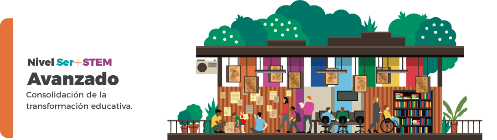
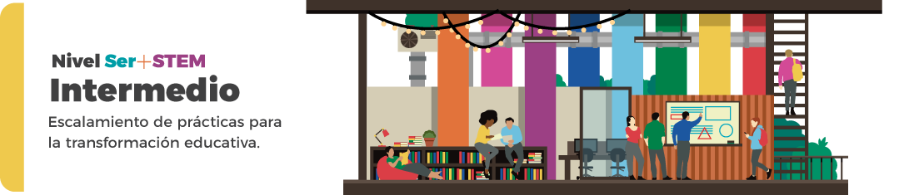
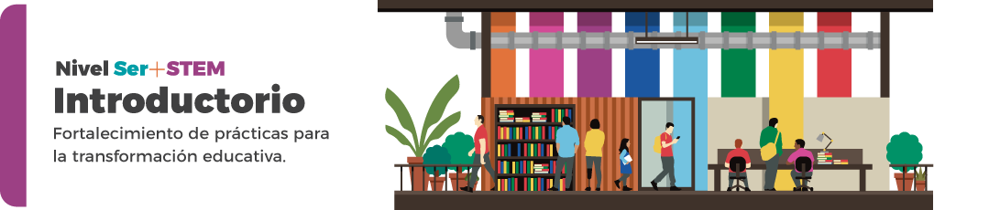
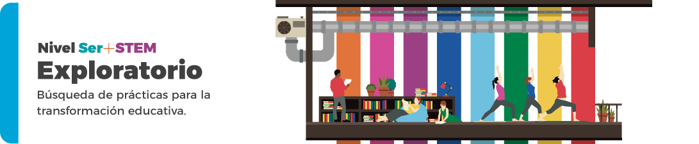
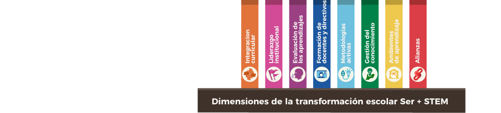

¿Qué es Ser+STEM?
Es un enfoque para orientar la transformación educativa mediante la articulación
interdisciplinar y el uso de metodologías activas de aprendizaje en los procesos de enseñanza y aprendizaje, con
el objetivo de fomentar las competencias necesarias para afrontar la vida en el contexto actual.




